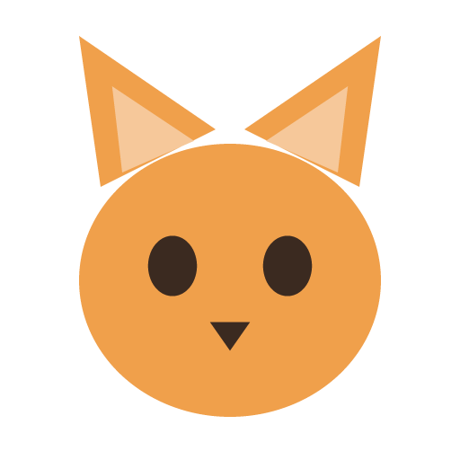

Desktop Pet
A small animated pet that floats over your whole desktop. Pick one, name it,
and it'll keep you company while you work.
Download for Windows
Windows 10 / 11 · 64-bit · free & open source
⚠️ Before you install
This app isn't code-signed (certificates cost money), so Windows will be
suspicious of it. SmartScreen shows "Windows protected
your PC" — click More info → Run anyway.
If you see "An Application Control policy has blocked this
file", that's Smart App Control, which blocks all unsigned apps.
You'd need to turn it off in Windows Security → App & browser control,
or run from source instead.
What it does
-
Pick a pet and name it
A cat, dog, or bunny — choose on the setup screen and give them a name. Rename any time from the tray.
-
Floats over everything
Transparent and always on top, and you can click straight through to whatever's behind it.
-
Drag it anywhere
Pick your pet up and drop it wherever you like. It remembers the spot next time you open the app.
-
Pet it
Click for a happy bounce, and hover to see their name.
-
Wanders on its own
Every so often it takes a short walk across your screen, turning around at the edges.
-
Lives in your system tray
Hide it, change pets, or quit from the tray icon — it stays out of your taskbar.
Prefer to run from source?
Needs Node.js. No installer, no warnings.
git clone https://github.com/kokoronoka/desktopPet.git
cd desktopPet
npm install
npm start